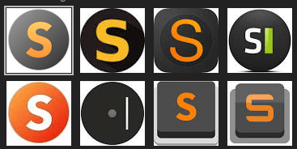
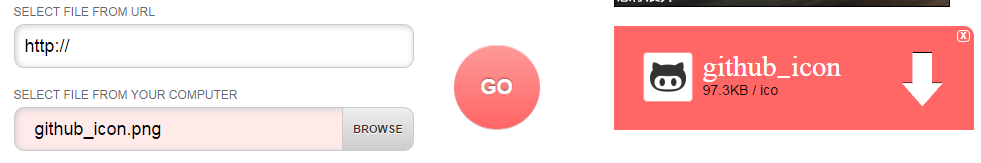
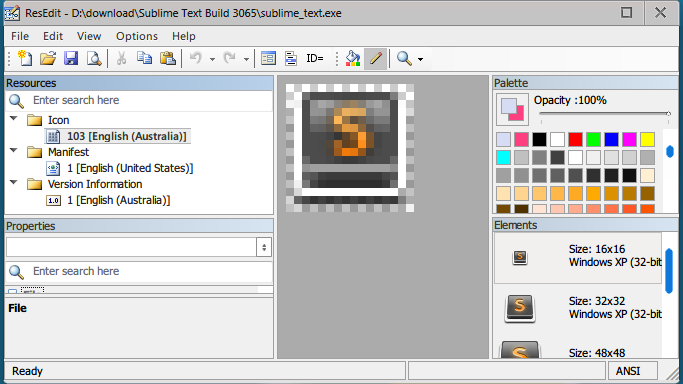
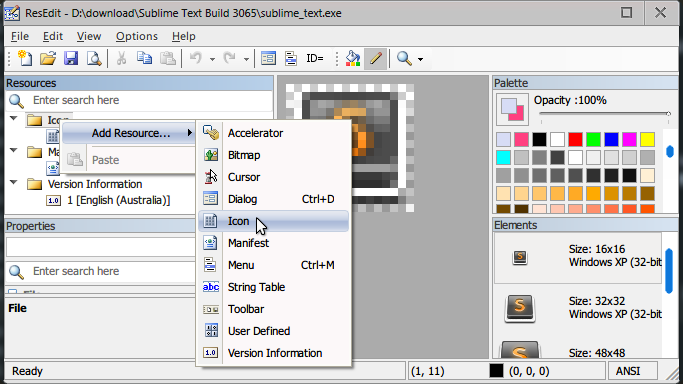
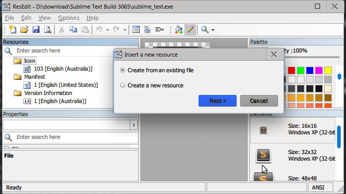
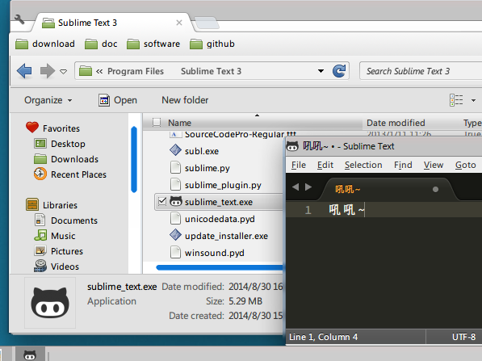

<!DOCTYPE HTML>
<html>
<head>
  <meta charset="utf-8">
  
  <title>自定义Sublime Text的图标 | 刘哇勇的部落格</title>
  <meta name="author" content="Wayou Liu">
  
  <meta name="description" content="有朋友反映替换icon后程序无法启动，请ST3来实验。
sublime text很赞，windows上最接近mac逼格的轻量编辑器，对于我这样比较喜欢格调的人来说，简直不二之选啊。
美中不足的是，看久了觉得它的图标似乎不是很上心。现在都流行扁平化了而它还停留在拟物的阶段，拟物也就算了还带一点立体感把整个平面内顷，于是乎想自己换个图标，换个好心情。
如果你有同样的审美那我们继续。">
  
  
  <meta name="viewport" content="width=device-width,initial-scale=1,maximum-scale=1">

  <meta property="og:title" content="自定义Sublime Text的图标">
  <meta property="og:site_name" content="刘哇勇的部落格">

  
  
		<!-- favicon -->
		<link rel="apple-touch-icon" sizes="57x57" href="/apple-touch-icon-57x57.png">
		<link rel="apple-touch-icon" sizes="60x60" href="/apple-touch-icon-60x60.png">
		<link rel="apple-touch-icon" sizes="72x72" href="/apple-touch-icon-72x72.png">
		<link rel="apple-touch-icon" sizes="76x76" href="/apple-touch-icon-76x76.png">
		<link rel="apple-touch-icon" sizes="114x114" href="/apple-touch-icon-114x114.png">
		<link rel="apple-touch-icon" sizes="120x120" href="/apple-touch-icon-120x120.png">
		<link rel="apple-touch-icon" sizes="144x144" href="/apple-touch-icon-144x144.png">
		<link rel="apple-touch-icon" sizes="152x152" href="/apple-touch-icon-152x152.png">
		<link rel="icon" type="image/png" href="/favicon-32x32.png" sizes="32x32">
		<link rel="icon" type="image/png" href="/favicon-96x96.png" sizes="96x96">
		<link rel="icon" type="image/png" href="/favicon-16x16.png" sizes="16x16">
		<link rel="manifest" href="/manifest.json">
		<meta name="msapplication-TileColor" content="#009688">
		<meta name="msapplication-TileImage" content="/mstile-144x144.png">
		<meta name="theme-color" content="#009688">
		<!-- favicon end -->
    <!-- <link href="/favicon.ico" rel="icon"> -->
  

  <!-- toc -->
  <link rel="stylesheet" href="/libs/tocify/jquery.tocify.css" media="screen" type="text/css">

  <!-- <link rel="stylesheet" href="/libs/bs/css/bootstrap.min.css" media="screen" type="text/css"> -->
  <link rel="stylesheet" href="//apps.bdimg.com/libs/bootstrap/3.3.4/css/bootstrap.min.css" media="screen" type="text/css">

  <!-- material design -->
	<!-- <link rel="stylesheet" href="/libs/bs-material/css/ripples.min.css" media="screen" type="text/css"> -->
  <link rel="stylesheet" href="//apps.bdimg.com/libs/bootstrap-material/0.3.0/css/ripples.min.css" media="screen" type="text/css">
  <!-- <link rel="stylesheet" href="/libs/bs-material/css/material.min.css" media="screen" type="text/css"> -->
	<link rel="stylesheet" href="//apps.bdimg.com/libs/bootstrap-material/0.3.0/css/material.min.css" media="screen" type="text/css">

  <link rel="stylesheet" href="/css/highlight.light.css" media="screen" type="text/css">

  <link rel="stylesheet" href="/css/style.css" media="screen" type="text/css">

  

  

  <script src="//apps.bdimg.com/libs/jquery/2.0.3/jquery.min.js"></script>
	<script>window.jQuery || document.write('<script src="/libs/jquery-2.0.3.min.js" type="text/javascript"><\/script>')</script>

</head></html>
 	<body>
	  <nav class="navbar navbar-default">
    <div class="container">
        <div class="navbar-header">
            <button type="button" class="navbar-toggle collapsed" data-toggle="collapse" data-target="#navbar" aria-expanded="false" aria-controls="navbar">
            <span class="sr-only">菜单</span>
            <span class="icon-bar"></span>
            <span class="icon-bar"></span>
            <span class="icon-bar"></span>
            </button>
            <a class="navbar-brand" href="/">刘哇勇的部落格</a>
        </div>
        <div id="navbar" class="collapse navbar-collapse">
            <ul class="nav navbar-nav navbar-right">
                
                <li>
                    <a href="/" title="">
                    <i class="fa fa-home"></i>首页
                    </a>
                </li>
                
                <li>
                    <a href="/archives" title="">
                    <i class="fa fa-list"></i>存档
                    </a>
                </li>
                
                <li>
                    <a href="/about" title="">
                    <i class="fa fa-info-circle"></i>关于
                    </a>
                </li>
                
                <li>
                    <a href="/atom.xml" title="这是一个订阅源">
                    <i class="fa fa-rss"></i>RSS
                    </a>
                </li>
                
            </ul>
        </div>
    </div>
</nav>
	  <div class="container">
	    <div class="row">
	
	<div class="col-md-9 center-content">
	
		<div class="content">
			<!-- index -->
		   

			  		<h1>自定义Sublime Text的图标</h1>
					
					<div>
						<span class="post-time">2014-08-31 11:56:00</span>
					</div>	
					

					<div class="article-content">
						<p>有朋友反映替换icon后程序无法启动，请ST3来实验。</p>
<p><a href="http://www.sublimetext.com/3" target="_blank" rel="external">sublime text</a>很赞，windows上最接近mac逼格的轻量编辑器，对于我这样比较喜欢格调的人来说，简直不二之选啊。</p>
<p>美中不足的是，看久了觉得它的图标似乎不是很上心。现在都流行扁平化了而它还停留在拟物的阶段，拟物也就算了还带一点立体感把整个平面内顷，于是乎想自己换个图标，换个好心情。</p>
<p>如果你有同样的审美那我们继续。</p>
<a id="more"></a>
<h2 id="step1-__u9009_u62E9_u559C_u6B22_u7684_u56FE_u7247"><a href="#step1-__u9009_u62E9_u559C_u6B22_u7684_u56FE_u7247" class="headerlink" title="step1. 选择喜欢的图片"></a>step1. 选择喜欢的图片</h2><p>首先你需要选择一个中意的图片做为新的图标，这里拿我喜欢的章鱼猫为例。<br></p>
<p>当然你不喜欢章鱼猫，随便<a href="https://www.google.com/search?q=octocat+icon&amp;newwindow=1&amp;safe=off&amp;tbm=isch&amp;imgil=wqxX4jp591NZZM%253A%253Beb8wapPIz1AUTM%253Bhttps%25253A%25252F%25252Fsupport.wombat.co%25252Fhc%25252Fen-us%25252Farticles%25252F202245250-Shipstation-Integration-&amp;source=iu&amp;fir=wqxX4jp591NZZM%253A%252Ceb8wapPIz1AUTM%252C_&amp;usg=__2FX1-Ux3h7wdDssc2u6t_4Ba7Nc%3D&amp;sa=X&amp;ei=EJ8CVI32HNjd8AXYp4KIAw&amp;ved=0CCsQ9QEwBQ&amp;biw=1366&amp;bih=683#newwindow=1&amp;q=sublime+text+icon&amp;safe=off&amp;tbm=isch&amp;facrc=_&amp;imgdii=_&amp;imgrc=NPM_JHMY3bmkdM%253A%3BavC4jPKJkwSy8M%3Bhttp%253A%252F%252Fwww.jonathanfontes.pt%252Fassets%252Fimg%252Flogo-sublime-3.png%3Bhttp%253A%252F%252Fwww.jonathanfontes.pt%252F%3B512%3B512" target="_blank" rel="external">谷歌一下</a>还是有很多正常的ST图标的，比如下面这些<br></p>
<h2 id="step2-__u8F6C_u4E3Aico_u683C_u5F0F"><a href="#step2-__u8F6C_u4E3Aico_u683C_u5F0F" class="headerlink" title="step2. 转为ico格式"></a>step2. 转为ico格式</h2><p>网上找的图片大多为<code>png</code>或<code>jpg</code>格式的，这里我们需要<code>ico</code>, so 需要转换一下下。<br>同样，转<code>ico</code>格式的网站也是蛮多的，比如<a href="http://www.convertico.com/" target="_blank" rel="external">这个</a>,进去后把图片上传，完了下下来后你得到的就是一个<code>.ico</code> 格式的图片啦~</p>
<p></p>
<h2 id="step3-_ResEdit"><a href="#step3-_ResEdit" class="headerlink" title="step3. ResEdit"></a>step3. ResEdit</h2><p><a href="http://www.resedit.net/" target="_blank" rel="external">ResEdit</a>是一个Windows下的资源编辑器，可以直接编辑<code>exe</code>文件，更改替换其中的资源，这里我们就用它来更改<code>exe</code> 程序的图标。<br>如果你手头没有，可以点击上面的链接进入官方页面选择下载。</p>
<h2 id="step4-__u7528ResEdit_u6253_u5F00SublimeText"><a href="#step4-__u7528ResEdit_u6253_u5F00SublimeText" class="headerlink" title="step4. 用ResEdit打开SublimeText"></a>step4. 用ResEdit打开SublimeText</h2><p>将SublimeText安装目录下的<code>sublime_text.exe</code>复制一分放到比如桌面什么的。<br>运行ResEdit, <code>File-&gt;Open Project...</code>, 打开刚才复制的<code>sublime_text.exe</code>。</p>
<p></p>
<h2 id="step5-__u66FF_u6362_u56FE_u6807"><a href="#step5-__u66FF_u6362_u56FE_u6807" class="headerlink" title="step5. 替换图标"></a>step5. 替换图标</h2><p>打开后差不多就像上面截图一样，你会看到左边<code>Resources</code>里第一个便是<code>Icon</code>, 在这个文件夹上面右击选择<code>Add resource...-&gt;Icon</code>,如下图</p>
<p></p>
<p>之后在弹出的对话框里选择<code>Create from an existing file</code></p>
<p></p>
<p>之后去选中我们先前准备好的<code>ico</code>文件，将其加载进来。</p>
<p>完了<code>Icon</code>文件夹下多了我们自己的icon文件，现在把原来的图标删除，右击<code>103[English (Australia)]</code> 选择<code>Remove from project</code>。</p>
<p></p>
<p>最后点击<code>File-&gt;Save</code>。</p>
<h2 id="step_final-__u66FF_u6362exe"><a href="#step_final-__u66FF_u6362exe" class="headerlink" title="step final. 替换exe"></a>step final. 替换exe</h2><p>最后，将更改后的<code>sublime_text.exe</code>考回SublimeText安装目录下将原来的文件覆盖，当然，如果你以后可能想要恢复原来的图标的话，建议你覆盖前将原来的<code>sublime_text.exe</code>文件备份一下。</p>
<p>All done!</p>
<p></p>
					</div>

			  <!-- about -->
			  
		</div>

		<!-- pagination -->
	  

		<div class="comment-section">
  
  
   <!-- 多说评论框 start -->
    <div class="ds-thread" data-thread-key="_posts/2014-08-31-how-to-customize-sublime-icon.md" data-title="自定义Sublime Text的图标" data-url="http://wayou.github.io/2014/08/31/how-to-customize-sublime-icon/"></div>
    <!-- 多说评论框 end -->
   <!-- 多说公共JS代码 start (一个网页只需插入一次) -->
    <script type="text/javascript">
    var duoshuoQuery = {short_name:'wayouliu'};
      (function() {
        var ds = document.createElement('script');
        ds.type = 'text/javascript';ds.async = true;
        ds.src = (document.location.protocol == 'https:' ? 'https:' : 'http:') + '//static.duoshuo.com/embed.js';
        ds.charset = 'UTF-8';
        (document.getElementsByTagName('head')[0] 
         || document.getElementsByTagName('body')[0]).appendChild(ds);
      })();
      </script>
    <!-- 多说公共JS代码 end -->
  


</div>
	</div>

	

</div>
		<footer>
			<p>
  由 <a href="https://hexo.io">hexo</a> 强力驱动 | 搭载 <a href="https://github.com/wayou/hexo-theme-material">material</a> 主题
</p>
<p>
  &copy; 2016 <a href="http://wayou.github.io"> Wayou Liu </a>
</p>
<a id="gotop" href="#" title="back to top"><i class="mdi-hardware-keyboard-arrow-up"></i></a>
		</footer>
	  </div>

		<!-- <script src="/libs/bs/js/bootstrap.min.js"></script> -->
		<script src="//apps.bdimg.com/libs/bootstrap/3.3.4/js/bootstrap.min.js"></script>
		<script>(typeof $().modal == 'function')|| document.write('<script src="/libs/bs/js/bootstrap.min.js" type="text/javascript"><\/script>')</script>

		<!-- material design -->
		<!-- <script src="/libs/bs-material/js/ripples.min.js"></script> -->
		<script src="//apps.bdimg.com/libs/bootstrap-material/0.3.0/js/ripples.min.js"></script>
		<!-- <script src="/libs/bs-material/js/material.min.js"></script> -->
		<script src="//apps.bdimg.com/libs/bootstrap-material/0.3.0/js/material.min.js"></script>
		<!-- toc -->
		<!-- <script src="/libs/tocify/jquery-ui.min.js"></script> -->
		<script src="//apps.bdimg.com/libs/jqueryui/1.10.4/jquery-ui.min.js"></script>
		<script src="/libs/tocify/jquery.tocify.custom.js"></script>

		<script src="/js/main.js"></script>

	</body>
